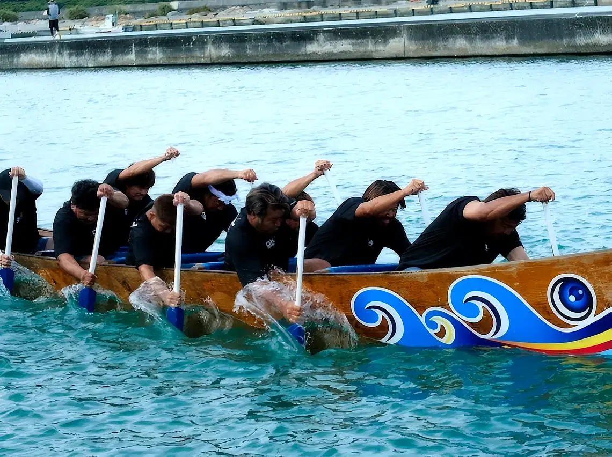
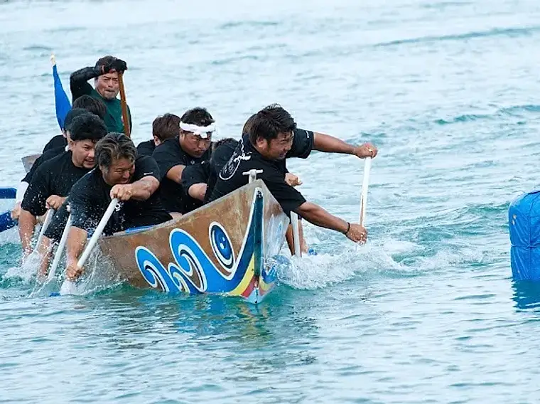
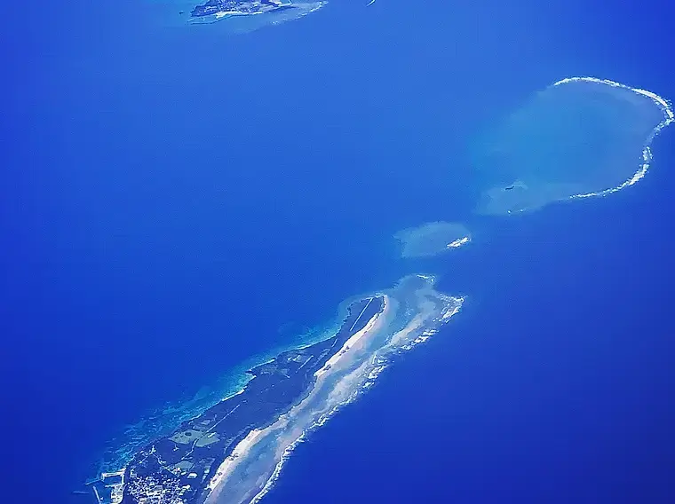
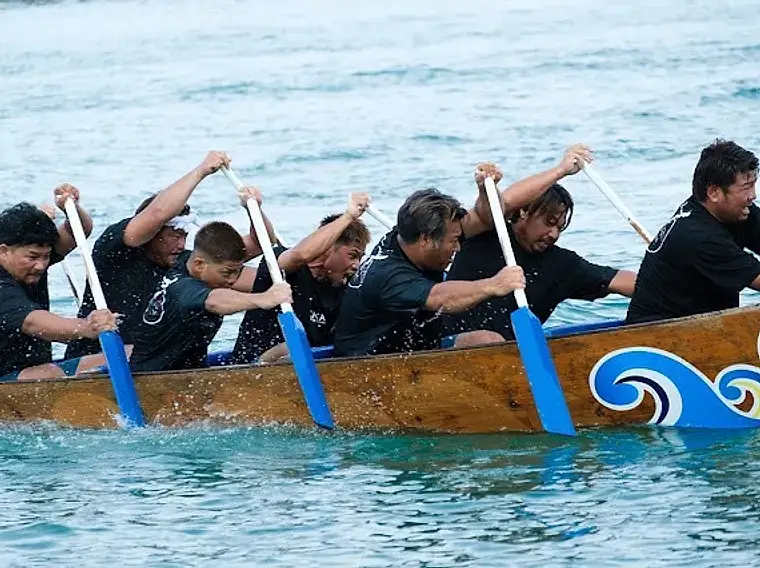
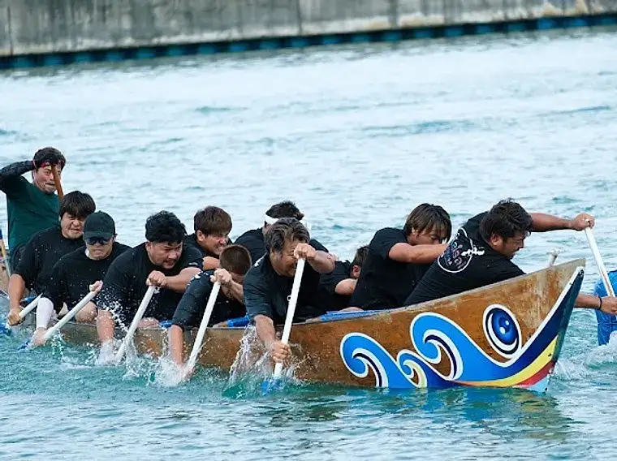
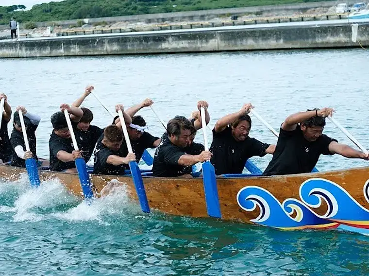
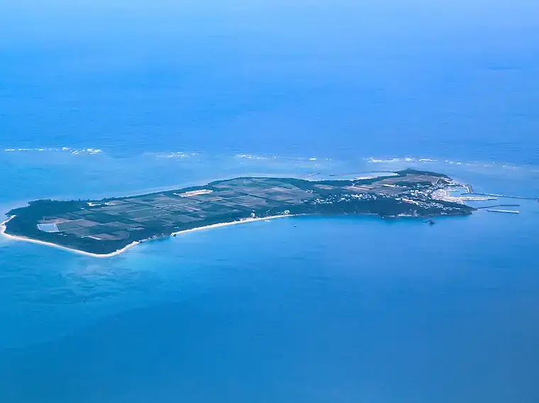
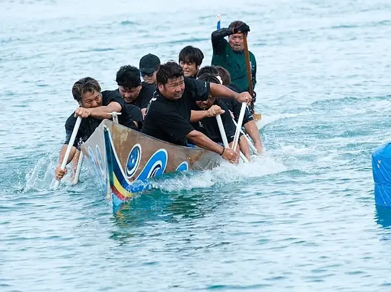

7年ぶりの開催
津堅ハーリー 2026
約7年ぶり、津堅島の海に漕ぎ手たちの声が帰ってくる。豊漁と航海安全を神に祈る、島の最大の行事です。
津堅島
01 — UGWAN HAARI
ウガンハーリー
神事としての競漕。豊漁と航海安全を神に祈るため、厳かに執り行われる伝統の儀礼レース。島人全員が見守る中、静寂の後に始まる。
02 — MAIN RACE
職域・地区対抗レース
漁業者・各地区が誇りをかけて競い合う。古くから続く競い合いが島のきずなを深め、声援と熱気が漁港を包む。
03 — MINYO SHOW
民謡ショー
ハーリー大会の終了後、漁港内ステージで神谷幸一による民謡ショーを開催。島唄の調べが、祭りの一日を締めくくる。
600年を超えて、
海に祈り続ける。
ハーリーは沖縄に600年以上前に伝わった伝統の爬龍船競漕。龍の頭と尾をあしらったハーリー船（爬龍船）を漕ぎ、豊漁と海の安全を神に祈る行事です。
かつては漁師が一年の航海無事を願う神事として執り行われ、今もその精神は島人の心に生き続けています。津堅島のハーリーは、那覇や糸満の大型イベントとは異なる、島の漁師たちによる素朴で力強い祭りです。

開催に向けて。
-
開催情報
約7年ぶりに、津堅ハーリーの開催が決定しました。
-
募集
出漕チームの参加受付を開始しました。詳しくは津堅区自治会までお問い合わせください。
-
当日案内
当日のフェリー運航・増便について調整を進めています。
お知らせはこのページで随時更新します。ご不明な点はお問い合わせください。
島が、動く。







漕ぎ手たちの島、
津堅島。
うるま市沖に浮かぶ周囲約7kmの小さな島。珊瑚礁の海に囲まれ、にんじん畑が広がる平坦な地に、ハーリーを漕ぐ島人たちが暮らしています。ここで生まれ育った漕ぎ手たちが、海への祈りを受け継いでいます。
平敷屋港から、
フェリーで30分。
那覇市内から車で約50分
にんじんキャラクターの船体が目印
徒歩・レンタサイクルで島内観光
- 運航会社
- 有限会社 神谷観光
- 出発地
- 平敷屋港（うるま市）
- 所要時間
- 約15〜30分（船種による）
- 1日の便数
- 5便（高速船・フェリー／季節変動あり）
- 車の乗船
- 可能（車両は要予約）
※ 旅客は予約不可・先着順での乗船です。ハーリー当日は混雑が予想されるため、早めの乗船をおすすめします。
※ 車両を航送する場合は事前予約が必要です。時刻表・運賃とあわせて神谷観光へご確認ください。
お問い合わせ。
ハーリーに関するお問い合わせは、LINE 公式アカウントで受け付けています。ボタンまたは QRコードから友だち追加して、メッセージをお送りください。
LINE公式アカウント
スマホの方はボタンから
パソコンの方はQR読み取りで追加できます